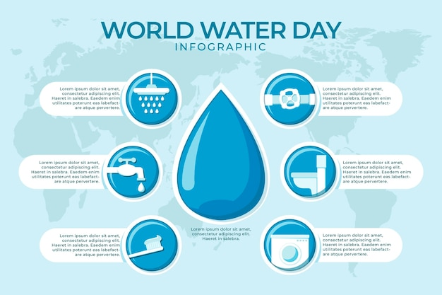

Galeri
Hastane ve klinik ortamımızdan görüntüler




İSÜ Liv Hospital Bahçeşehir'de sağlığınız için hizmetinizdeyim
Randevu AlınzDeğerli hastalarımızın görüşleri
Randevu almak için web sitemizdeki randevu formunu doldurabilir, +90 (444) 4 548 numaralı telefondan arayabilir veya hastanenin resepsiyonuna şahsen başvurabilirsiniz.
Liv Hospital olarak çoğu özel sağlık sigortası ve tamamlayıcı sağlık sigortası ile anlaşmamız bulunmaktadır. Detaylı bilgi için hastane resepsiyonunu arayabilirsiniz.
İlk muayenede detaylı bir anamnez alınır, fizik muayene yapılır ve şikayetlerinize göre gerekli tetkikler planlanır. Önceki tetkik ve tedavi bilgilerinizi yanınızda getirmeniz faydalı olacaktır.
Evet, diyaliz tedavisi için önceden randevu almanız gerekmektedir. Düzenli diyaliz hastaları için ise belirli bir program oluşturulur ve bu program dahilinde tedaviler sürdürülür.
Hastane ve klinik ortamımızdan görüntüler
İSÜ Liv Hospital Bahçeşehir
Bahçeşehir 2. Kısım, Avrasya Caddesi No: 2
34488 Başakşehir/İstanbul
Pazartesi - Cuma: 09:00 - 18:00
Cumartesi: 09:00 - 14:00
Pazar: Kapalı